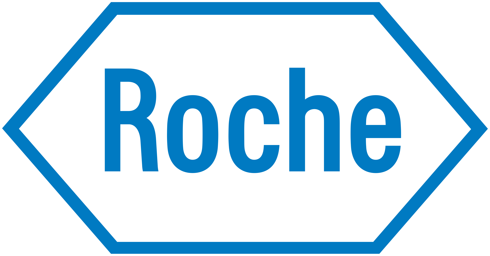
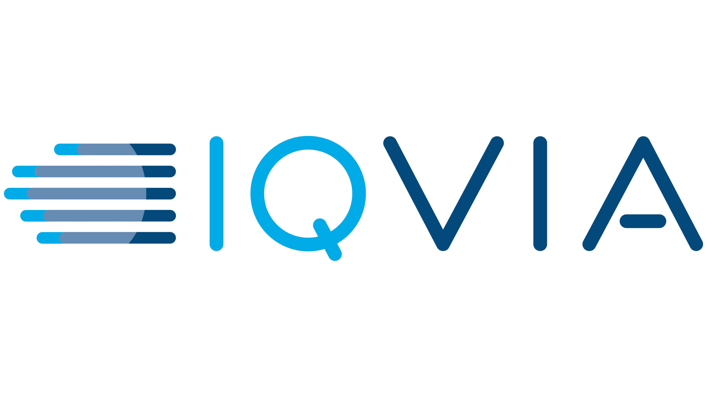
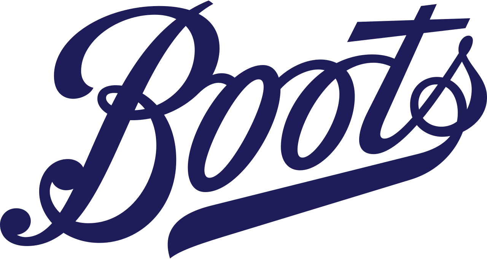
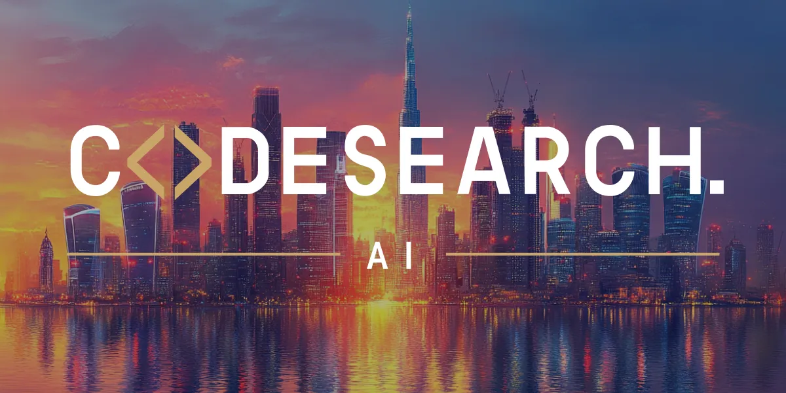

Data, AI & Transformation
The Problem
Everyone can see the potential. Few can turn it into a plan.
Most leadership teams already know AI, automation and digital transformation matter. What’s missing isn’t ambition, it’s practical guidance: where to focus first, what to prioritise, and how to translate emerging technology into real business value, in language that survives contact with a board.
That gap is usually filled one of two ways — an expensive strategy deck with no delivery muscle behind it, or a technical hire who can build but can’t yet be trusted with the room. Both leave leaders exposed at exactly the moment they need clarity most.
Meet The Founder
Hello
I'm Ian Lloyd - Founder
I am the partner that organisations turn to when they're ready to move beyond the hype and unlock real business value with AI. With over 20 years of global experience driving complex transformation, I turn ambitious ideas into practical, scalable solutions that deliver measurable impact.
At the forefront of AI and intelligent systems, I combine deep technical insight with a sharp ability to diagnose blockers and chart clear paths forward. As a founder of Ripple Fusion, I lead with clarity and purpose, mobilising expert teams, simplifying complexity, and helping organisations shift from inertia to momentum.
I've successfully advised some of the world's most recognised organisations. Across every engagement, my focus remains the same: using emerging technology to create meaningful, sustainable outcomes, always with people at the centre.
Trusted By
Leadership teams at organisations including:

Pharma
Healthcare Data
Health & Retail
SoftwareInvestors in private equity companies:
Meet Nina
Hello
Hello, I'm Nina — how can I help today?
Most transformation execs talk about AI. I built an AI-first business around one. Nina runs lead gen, socials, ops and finance, end to end, every day, no shortcuts.
She's not the pitch. She's the proof. 20+ years leading transformation, tested on my own AI-first business first.
Say “hello”, she might just say it back
How I Work
Three things every engagement is built on.
Clarity Over Complexity
Where every engagement starts.
Deep technical insight paired with a sharp ability to diagnose blockers and chart a path the board will actually back.
Built For Delivery
How the work actually gets done.
Expert teams mobilised around the work itself, not a strategy deck shelved after the workshop — momentum from day one.
People At The Centre
What it's all in service of.
Emerging technology in service of outcomes people actually feel — sustainable, not just impressive in a deck.
How I Engage
Choose the level of involvement you need:
Advisory
For leadership teams who need direction, not headcount.
Strategic AI advisory at board or exec level — assessing opportunity, setting priorities, and building the roadmap. Ideal when you need credible thinking before you commit resources.
Embedded Strategist
For teams already moving who need sharper prioritisation and ROI discipline.
Working alongside your leadership and technical teams to identify use cases, build the business case, and keep transformation initiatives aligned to outcomes — not just activity.
Interim Programme Lead
For organisations building an AI Centre of Excellence or portfolio from scratch.
Hands-on leadership of AI and data initiatives through the full lifecycle — from early use case assessment through to deployment, adoption and benefits realisation — with the governance and delivery discipline to scale it properly.
Interim Chief Data Officer
For organisations that need senior data leadership before they're ready to hire permanently.
Full ownership of the data agenda at leadership-team level — strategy, governance, quality and infrastructure — keeping momentum until a permanent hire is ready to take over.
Interim Chief AI Officer
For organisations that need senior AI leadership before they're ready to hire permanently.
Full ownership of the AI agenda at leadership-team level — strategy, prioritisation, delivery and governance — keeping momentum until a permanent hire is ready to take over.
Non-Executive Director (NED)
For boards that want ongoing data and AI expertise at the table.
An experienced voice at board level — challenging strategy, assessing risk, and keeping data and AI decisions grounded in commercial reality.
Capability Pillars
Six areas of practical, hands-on delivery.
AI & Data Strategy
Assessing opportunity, prioritising use cases, and building a roadmap the board will actually back.
Data Foundations
The unglamorous plumbing — pipelines, governance, quality — that every AI initiative quietly depends on.
Applied AI
From proof of concept to production — models and agents built for the messiness of real business processes.
Delivery Leadership
Hands-on programme leadership through the full lifecycle, with the discipline to scale it properly.
Governance & Risk
Structure and pace, without slowing innovation down — the guardrails a board needs to say yes.
Adoption & Change
Making sure the people the work is for actually use it — training, communication, and change support.
What Success Looks Like
Senior stakeholders get credible, practical, commercially relevant guidance — not concepts
AI opportunities prioritised clearly against real business needs
Leaders leave every discussion with actionable next steps
Complex delivery activity translated into decisions, risk, progress and value
Structure and pace, without slowing innovation down
Get In Touch
Speak With Nina Today to create your ripple
Ready to rethink how your transformation, data and AI actually work?
Contact Details
hello@ripplefusion.com
Phone
+44 7930 337 721
Locations
- United Kingdom (London)
- UAE (Dubai)
- EU (Aarhus, Denmark)
Follow Us
© 2026 Ripple Fusion. All rights reserved.